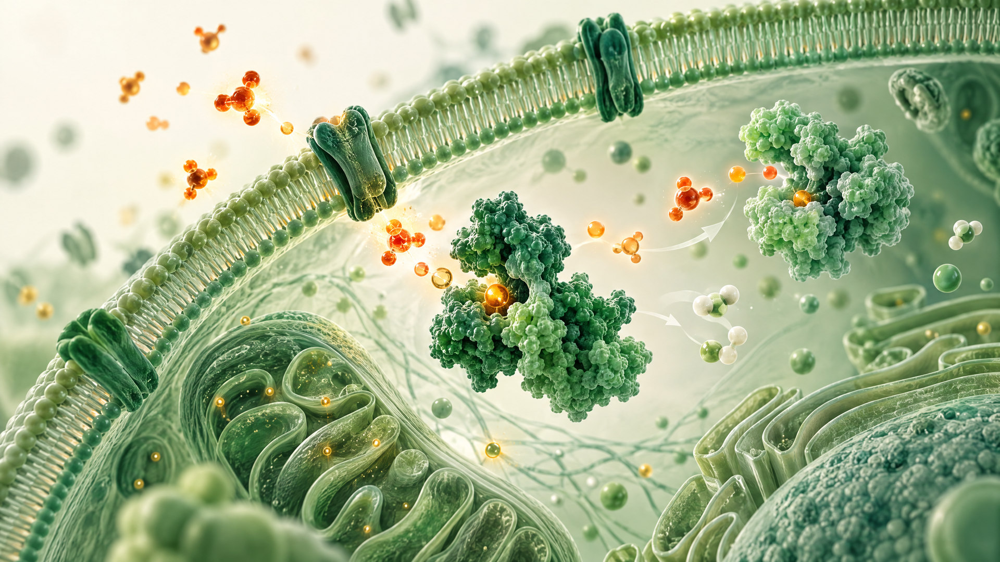
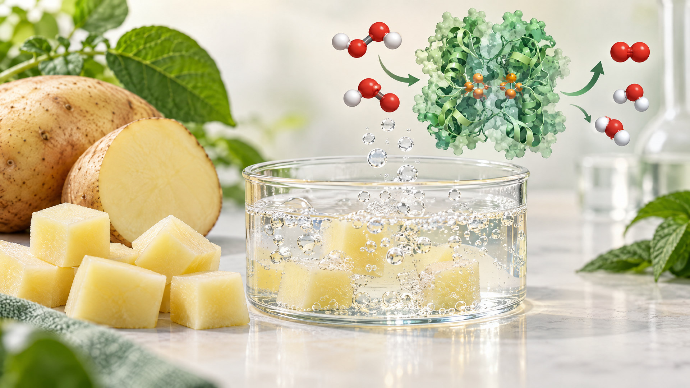

NEUROSCIENCE
What Happens to Your Brain When You Learn Something New?
Explore neuroplasticity, practice, memory, sleep, and how the brain adapts through learning.
Read article →Exploring the science of life through research, scientific communication, student projects, discussion and collaboration.
Explore scientific research, investigations and projects covering biochemistry and related fields.
An experimental investigation of catalase activity under different conditions, including temperature, pressure, substrate concentration and other factors.
View ResearchThe Young Biochemist aims to encourage students to explore scientific questions, communicate research and share their discoveries.
Discover topics across the life sciences.
Explore the chemistry and molecular processes underlying life.
Discover student-led investigations, projects and scientific questions.
Explore technologies that use biology to solve scientific problems.
Explore genetics, molecular biology, health and the living world.
Scientific writing designed to make complex ideas easier to explore and understand.
Explore neuroplasticity, practice, memory, sleep, and how the brain adapts through learning.
Read article →
A student-friendly introduction to guide RNA, Cas9, gene editing, safety, and ethics.
Read article →
Learn how reactive oxygen species, antioxidant defenses, and cellular balance are connected.
Read article →
How a simple potato experiment explored catalase activity under different temperatures and pH conditions.
Read on Medium →More writing by Avani on Medium · @AuthorCosmos
Become part of a growing student science community. Participate in scientific discussions, projects, events and collaborative activities.
Join the CommunityScience discussions, meetings, presentations and future Young Biochemist activities.
Details about upcoming meetings and scientific activities will be announced here.